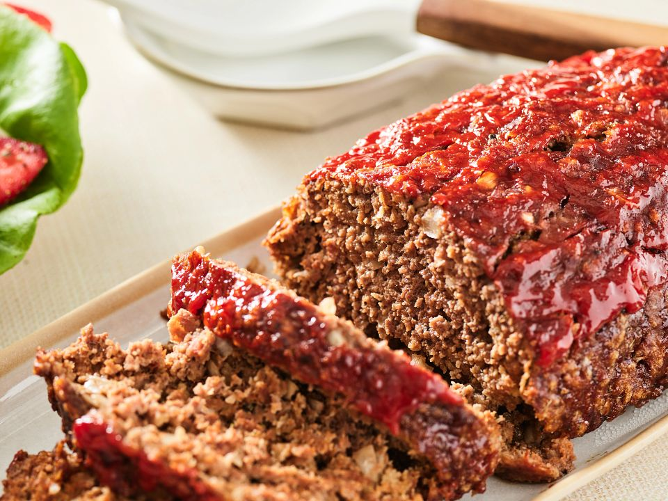

Home
Meat Loaf

Description
Meat loaf recipe features baked-in Cheddar cheese for rich flavor and a gooey texture.
Ingredients
- 2 large eggs
- 2/3 cup milk
- 2 teaspoons salt
- 1/4 teaspoon ground black pepper
- 3 slices bread, crumbled
- 1 1/2 pounds ground beef
- 1 onion, chopped
- 1 cup shredded Cheddar cheese
- 1/2 cup shredded carrot
- 1/4 cup brown sugar
- 1/4 cup ketchup
- 1 tablespoon prepared yellow mustard